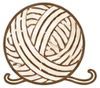
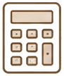
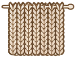

🧶 編み物・毛糸量計算ツール
作品の種類・サイズを入力して必要な毛糸量を計算します
📋 計算履歴（最新5件）
計算結果
📊 消費量ビジュアライゼーション
使い方はかんたん 4ステップ
むずかしい操作は不要。3分で必要な毛糸量が分かります。
サイズを入力
作りたい作品の幅と長さ（cm）を入力。プリセット選択もOK。

糸の太さを選ぶ
毛糸の太さ（ウェイト）と編み方を選択します。

計算する
ボタンを押すだけ。必要量・玉数・材料費を表示。
購入・保存
結果をもとに購入。履歴・コピー・CSV出力に対応。
初心者ガイド ＆ ゲージの取り方
毛糸の太さ・玉数の選び方
| 太さ（ウェイト） | 主な用途 | 1玉 |
|---|---|---|
| レース糸（極細） | 繊細な模様編み | 約400m |
| フィンガリング（細） | 靴下・手袋 | 約200m |
| DK（合太） | 初心者向け全般 | 約100m |
| ワーステッド（並太） | セーター・小物 | 約100m |
| バルキー（極太） | マフラー・帽子 | 約50m |
※ 太い糸ほど早く編めて初心者向き。糸が細いほど必要な玉数は増えます。

ゲージの取り方 3ステップ試し編みをする
本番と同じ糸・針で10cm四方より大きめに編みます。
10cmの目数・段数を数える
定規をあてて目数と段数を数えます。
計算ツールに反映
測ったゲージをもとに必要量を正確に算出。
作品別テンプレート ／ 必要量データベース
上の計算フォームのプリセットから目安サイズをワンタップ。
🔗 関連サービス
📖 使い方
- 作品の種類（プリセット）を選ぶ、または幅・長さを入力する
- 毛糸の太さ・編み方を選択する（任意で単価・目標値も入力）
- 「計算する」ボタンを押して必要量・玉数・材料費を取得する
- 表示された結果・グラフ・アドバイスを確認する
- 必要に応じて印刷・コピー・CSV・SNSシェアで活用する
❓ よくある質問
編み物・毛糸量計算ツールは無料で使えますか？
はい、完全無料・登録不要でご利用いただけます。回数制限もなく、何度でもお使いいただけます。
スマートフォンでも使えますか？
はい、スマートフォン・タブレット・PCすべてに最適化されています。手芸店でその場で確認することもできます。
入力したデータはサーバーに保存されますか？
いいえ。すべての処理はブラウザ内で完結し、入力内容がサーバーへ送信されることはありません。計算履歴はお使いの端末内にのみ保存されます。
毛糸量の計算結果は正確ですか？
ゲージ（編み目の密度）を基に算出した参考値です。実際の消費量は個人の編み具合で±20%程度変わる場合があるため、1〜2玉多めの購入をおすすめします。
玉数や材料費以外に何が計算できますか？
必要なメートル数・グラム数、毛糸の太さによる消費量比較などが計算できます。毛糸の単価を入力すれば材料費の概算も算出できます。
⚠️ 本ツールの結果は参考情報です。専門的判断は資格を持つ専門家にご相談ください。
📋 このツールの詳細
「編み物・毛糸量計算ツール」は、作品サイズと糸の太さを入力するだけで、必要な毛糸量・玉数・材料費をすぐに確認できる無料の計算ツールです。
このツールでできること
作成したいアイテム（セーター・マフラー等）・サイズ・使用する糸の太さを入力すると、必要な毛糸の量（メートル・グラム・玉数）を計算します。毛糸の太さごとの消費量比較もグラフで確認できます。
活用シーン・使い方
編み物作品の材料を購入する前の計算や、糸が足りるかどうかの確認に活用できます。オリジナルデザインや、既存パターンのサイズ変更時の糸量換算にも役立ちます。
注意点・補足
毛糸の必要量はゲージ（編み目の密度）によって変わります。必ずゲージを合わせてから本番の計算をしてください。余裕を持って1〜2玉多めに購入することをおすすめします。
毛糸の太さ別・必要量の目安データ
代表的な毛糸の太さ（ウェイト）ごとに、1玉あたりの長さと標準的なゲージの目安を整理しました。計算前の参考にご活用ください。
| 太さ（ウェイト） | 1玉の目安 | ゲージ目安（10cm） |
|---|---|---|
| レース糸（極細） | 約400m / 50g | 約32〜40目 |
| フィンガリング（細） | 約200m / 50g | 約26〜30目 |
| DK（合太） | 約100m / 40g | 約20〜24目 |
| ワーステッド（並太） | 約100m / 50g | 約18〜20目 |
| バルキー（極太） | 約50m / 50g | 約12〜15目 |
※ 上記は一般的な市販毛糸の目安です。実際の数値は製品ラベルをご確認ください。
⚠️ 計算結果の活用にあたって
- 計算結果はゲージを基にした参考値です。購入時は1〜2玉の余裕を持たせてください。
- 消費者庁「くらしの安心ガイド」
よくある質問（くわしく）
- Q. 毛糸の種類と素材の選び方を教えてください
- 毛糸の素材は用途によって使い分けが重要です。ウール（羊毛）は保温性・弾力性に優れセーター・マフラーに最適ですが、洗濯に注意が必要です。コットン（綿）は夏向けで洗いやすくアレルギーが少ないため肌着・夏用小物に向いています。アクリルは低価格・洗濯機洗い可能で初心者向けです。カシミヤ・アルパカは高価ですが柔らかく高級感があります。太さ（糸番手）も重要で、細い糸は繊細な作品・太い糸は早く編める初心者向けです。
- Q. 編み図の読み方がわからない場合はどうすればよいですか？
- 編み図は最初は難しく感じますが、基本的な記号を覚えると読めるようになります。棒針編みの基本は「表目（V字）」「裏目（横棒）」「かけ目」「左上二目一度（減らし目）」です。かぎ針編みは「鎖編み（○）」「細編み（×）」「長編み（T字）」が基本です。日本の編み図は統一された記号体系（日本ヴォーグ社標準）を使っていることが多いです。YouTubeや書籍の動画付き解説で実際の手の動きを確認しながら練習すると習得が早まります。
- Q. 毛糸の量（グラム・玉数）が途中で足りなくなった場合はどうしますか？
- 毛糸が途中で足りなくなった場合、同じ色番号・ロット番号の毛糸を追加購入することが理想ですが、ロット違いは微妙な色差が出る場合があります。対策として「編み始め前に必要量より10〜20%多めに購入する」「セーターなどは両袖を同じロットで揃える」「残り糸が少なくなってきたら早めに追加注文する」があります。本計算ツールで必要グラム数を事前に把握することで、買い足しトラブルを防げます。
編み物・毛糸量計算ツールの活用ガイド（計算・シミュレーションツール）
作品サイズと編み方から必要な毛糸の量を計算。材料費の目安も算出。登録不要・完全無料でご利用いただけます。スマホ・PC対応。登録不要・完全無料。。登録不要・完全無料でご利用いただけます。スマートフォンやタブレットからもアクセス可能です。
こんな方におすすめ
- 費用や数値をすぐに試算したい方
- 複数のシナリオを比較検討したい方
- 予算計画や見積もりの参考にしたい方
よくある質問
Q. 計算したデータは保存されますか？
A. 入力したデータはサーバーに送信されません。ページを閉じると消去されます。
Q. スマートフォンで使えますか？
A. はい、すべてのデバイスに対応しています。
編み物の材料計算と初心者が知っておくべき基礎知識
編み物は毛糸・針・パターンを用意して自分のペースで楽しめる手芸です。必要な毛糸量を正しく計算することで無駄な購入を避け、作品の完成度を高めることができます。
- 編み物の種類：棒針編み（2本または複数本の棒針を使用）・かぎ針編み（1本のかぎ針を使用）・指編み・機械編みなど様々な技法がある
- 手芸のメリット：編み物などの手芸は集中による瞑想効果・達成感・認知機能の維持など心身への効果が報告されている
Q. 編み物で毛糸の量を計算するためのポイントを教えてください。
A. 毛糸の必要量計算のポイントとして「ゲージ（テンション）を確認する：使う糸・針でゲージを編んで1cm²に何目・何段入るかを確認する。ゲージが違うと仕上がりサイズが変わる」「パターン記載の糸量を参考にする：多くのパターンは使用糸量を記載しているが、自分のテンションが違う場合は調整が必要」「余裕を持って購入する：同じロットナンバー（染色番号）で購入しておく。あとから同じ色が手に入らないことがある」「太さによる違い：糸が細いほど同じデザインでも使用量が増える」があります。
Q. 初心者がまず覚えるべき編み物の基本ステッチは何ですか？
A. 編み物初心者の基本として「棒針編みの基本：表目（メリヤス編みの表側）・裏目・表目と裏目の組み合わせであらゆる模様が作れる。まず作り目→表目→裏目の3つを覚える」「かぎ針編みの基本：鎖編み・細編み・中長編み・長編みの4つが基本。輪編みでモチーフ・マフラーなどを作れる」「はじめやすい作品：マフラー・コースター・ポーチなどシンプルで仕上がりが予測しやすい作品から始めるとモチベーションが続く」があります。
Q. 毛糸の素材（ウール・アクリル・コットン等）はどう選べばよいですか？
A. 毛糸素材の選び方として「ウール：保温性・伸縮性・吸湿性に優れる。手洗いが必要なものが多いが天然素材の温かみがある。初心者にも扱いやすい」「アクリル：安価・洗濯機使用可・色のバリエーションが多い。子ども用・日用品に適している。ただし天然素材に比べると通気性が低め」「コットン：夏物・肌触り重視のアイテムに適している。伸縮性が少なく編みやすいが、重みがある」「シルク・カシミヤ：高級感があるが価格が高く初心者には扱いにくい場合がある」があります。